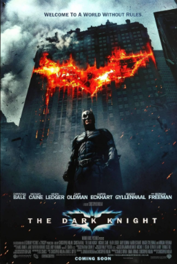
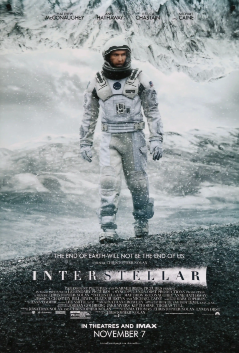
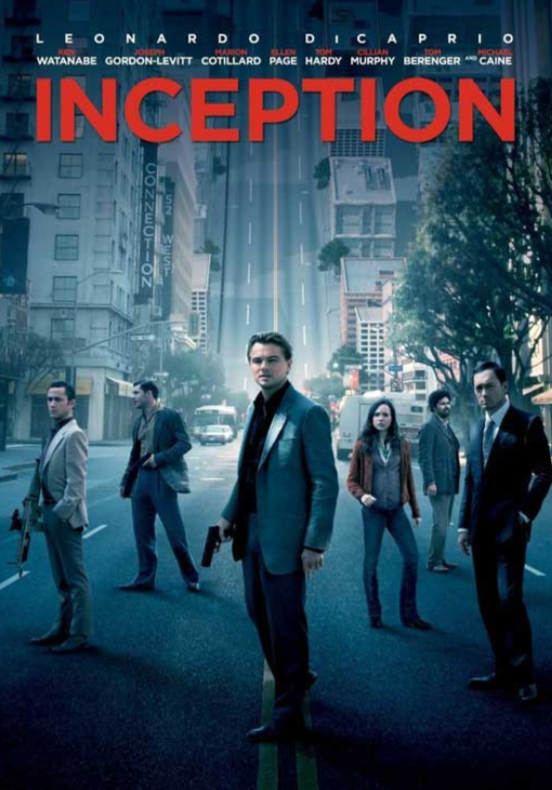
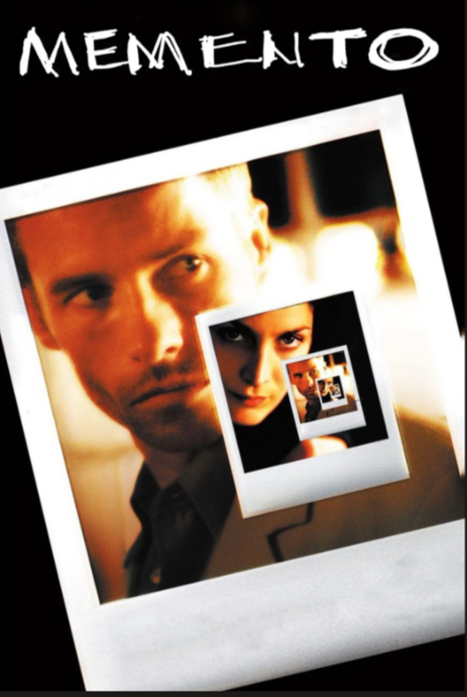
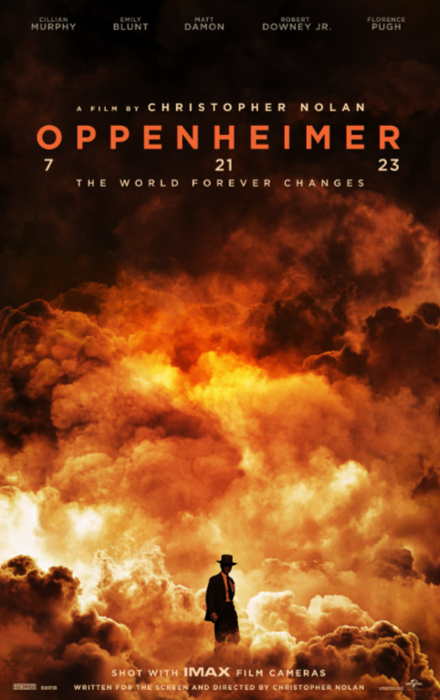
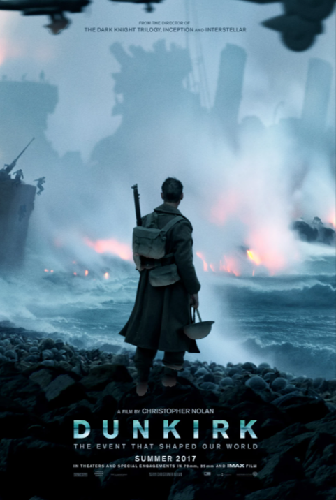

My Collection
This is my curated collection of my six favorite Christopher Nolan movies. Nolan is my favorite director, and these six movies are the ones that have left the most lasting impression on me.

The Dark Knight
Movie | 2008 | Christopher Nolan | Superhero
Batman faces off against the Joker, a criminal mastermind who seeks to create chaos in Gotham City in order to test how far Batman is willing to go to save the city.

Interstellar
Movie | 2014 | Christopher Nolan | Science Fiction
Set in a dystopian future where Earth is suffering from famine and blight, a group of astronauts travel through space in search of a new home for humanity.

Inception
Movie | 2010 | Christopher Nolan | Science Fiction
A thief who steals corporate secrets through the use of dream-sharing technology is hired to plant an idea into the mind of a CEO in exchange for his criminal record being cleared.

Memento
Movie | 2000 | Christopher Nolan | Thriller
A man with short-term memory loss uses a system of notes, tattoos, and photos in order to track down the man who killed his wife and caused his condition.

Oppenheimer
Movie | 2023 | Christopher Nolan | Biography
The story of J. Robert Oppenheimer, the physicist who led the development of the world's first atomic bomb during the Manhattan Project in World War II.

Dunkirk
Movie | 2017 | Christopher Nolan | War
The story of the Dunkirk evacuation during World War II, told from three different perspectives: people on land, people on sea, and people in the air.